Memuro
Memuro · Hokkaido
Memuro
Highlighted on the Hokkaido map.
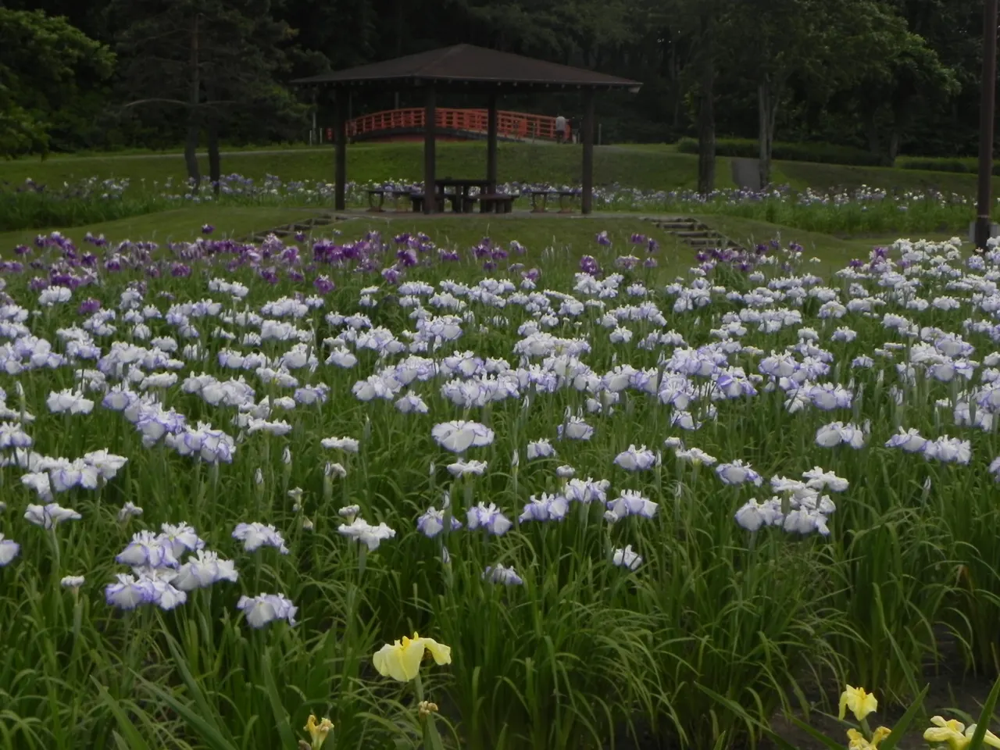
Stay
ビジネスホテルアルム メムロ
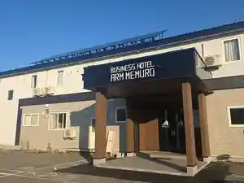
Bijinesuhoteruarumu Memuro
畑の宿 モクモク十勝
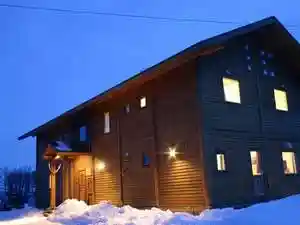
Hatake No Yado Mokumoku Tokachi
Dining
焼肉 KAGURA
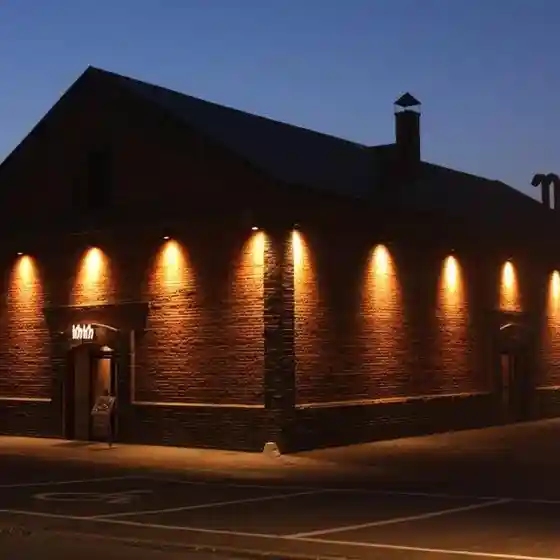
Yakiniku Kagura
つぼ八 芽室店
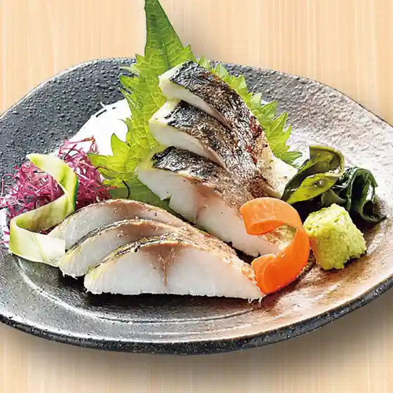
Tsubo Hachi Memuro Mise
dining cafe CLE
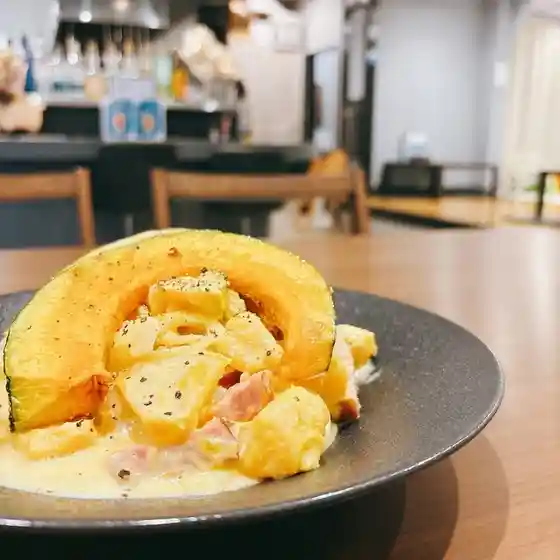
Dining Cafe Cle
回転ずし 羽衣亭 芽室店
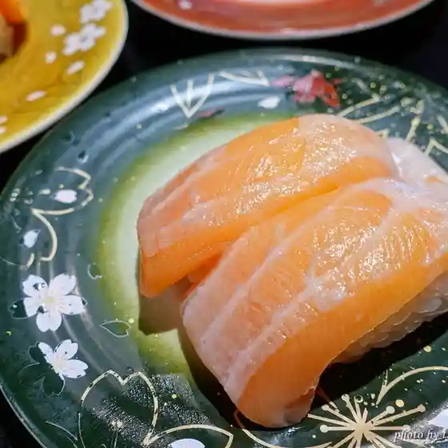
Kaiten Zushi Hagoromo Tei Memuro Mise
手打ち十割そば 紀山
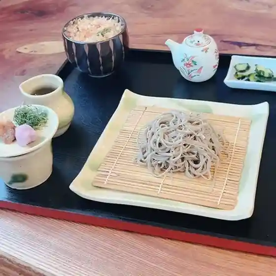
Teuchi Chi Juu Wari Soba Ki Yama
芽室仕出し株式会社
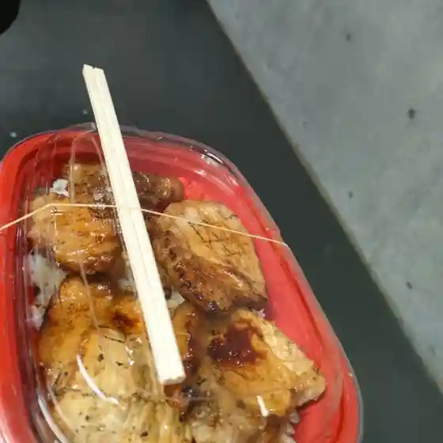
Memuro Shidashi Kabushikigaisha
ビジネスホテル アルムメムロ
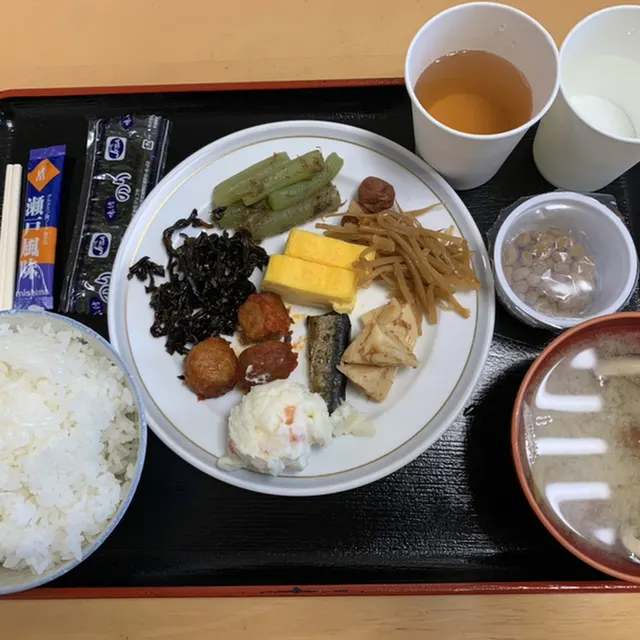
Bijinesuhoteru Arumumemuro
名もなきコーヒー
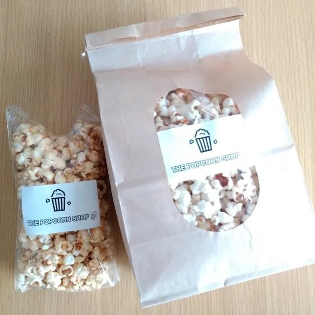
Mei Monaki Koohii
Gステップス
G Suteppusu
レストランHIRO
Resutoran Hiro
Cafe Kringel
Cafe Kringel
そば蔵 大正（笑）庵
Soba Kura Taishou ( Warai ) Iori
カントリーブラン
Kantoriiburan
ファーストフードまさおか
Faasutofuudo Masaoka
めむろ窯
Memuro Kama
十勝芽室 さくら亭
Tokachi Memuro Sakura Tei
ケンヤシ食堂
Kenyashi Shokudou
旅館ゆたか
Ryokan Yutaka
セイコーマート 芽室東1条店
Seikoomaato Memuro Higashi 1 Jou Mise
いちぜん小料理店
Ichizen Koryouri Mise
カフェ来ぶら～り
Kafe Rai Bura ~ Ri
めむろまちの駅
Memuromachino Eki
ザ ポップコーン ショップ
Za Poppukoon Shoppu
めむろファーマーズマーケット あいす屋
Memuro Faamaazumaaketto Aisu Ya